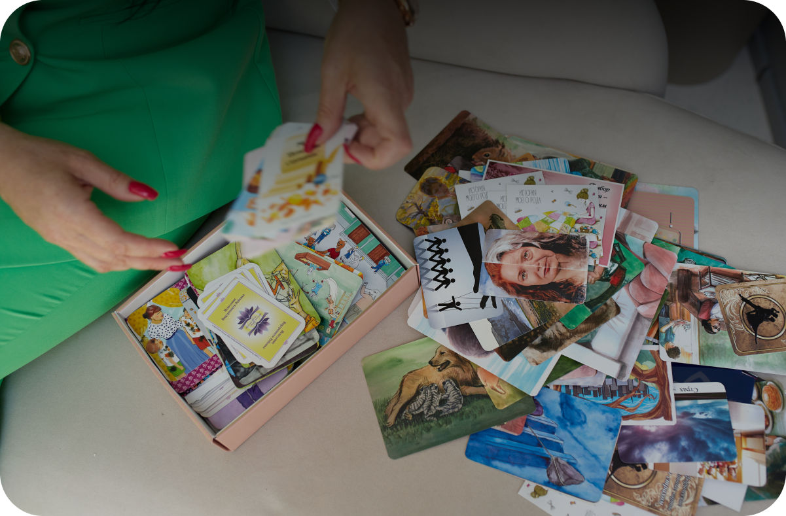

Программа профессиональной переподготовки с выдачей диплома
Кому подойдет данная программа?

Новичкам
- Если вы хотите сменить род деятельности, метафорические карты позволяют совершить мягкий переход в новую профессию, за счет совмещения деятельности.
- Отсутствие психологического опыта или образования компенсируется наличием четкой системы работы с метафорическими ассоциативными картами.
- Не нужно использовать собственный авторитет в терапии, клиент самостоятельно интерпретирует изображения, тем самым берет часть ответственности за результат на себя.
- Быстрый способ выйти на доход, техники работы и практики доступны с самого начала обучающего процесса, не нужно ждать диплом.

Опытным специалистам помогающих профессий
- Дополнительно расширит ваш инструментарий. В большинстве случаев МАК карты самый экологичный вид терапии.
- Использование метода в групповой терапии, поможет повысить доход.
- Метод максимально вовлекает в процесс самого клиента. Повышается лояльность к психологу, как следствие увеличивается количество запросов на терапию.
Почему именно наш институт нужно выбрать для обучения
Опыт создания обучающих систем, проверенный временем
Звездный преподавательский состав
Не просто теория, а практика в процессе обучения
Супервизии в группе с практикующими специалистами
Помощь в разборе вашей практики
Тьютор на весь процесс обучения
Инновационные методы тестирования знаний без зазубривания материала
Неограниченный доступ к материалам программы

Программа курса
Программа дипломного курса из 53 видео-уроков:продолжительность каждого урока - 2-3 часа
Подробнее- Предварительный урок. Классификация колод. Техника безопасности. Практика Денежный потолок. Игра. Препятствия и возможности.
- Формирование штампа судьбы. Как формируется судьба человека.
- Саботаж. Вторичные выгоды неудач. Почему нам «выгодно» проживать проблемы
- Ролевые игры в паре. Треугольник «Тиран-Жертва-Спасатель»
- Мужчина по судьбе/под задачу. Что влияет на наш выбор партнера
- Ответы на часто задаваемые вопросы.
- Любовный треугольник. Завершение прошлых связей. Манипуляции. Виды и принципы манипулятивных игр.
- Личные границы. Кто есть Я? Как формируется наша идентичность.
- Денежный потолок. Работа с денежной составляющей. Как формируются деньги в нашем пространстве.
- Проработка причин, влияющих на низкий уровень финансов. Провальные финансовые стратегии.
- Дополнительный урок Закрытый тренинг для учеников Жанны Абрамовой
- Мнемотехники (как быстрее и эффективнее усваивать материал). Ответы на часто задаваемые вопросы
- Травмы детства. Исцеление детского страха.
- Принцип отправной точки травм. Где и когда сформировались истинные причины наших проблем. Психосоматозы (болезни, основанные на психотравме)
- Родительско-детские конфликты. Жизнь подростка. Травмы пубертатного периода, влияющие на формирование судьбы. Созависимость. Симбиоз. Сепарация.
- Повторение маминой судьбы. Зачем мы живем? Коллаж болезней. Принцип метафизики (заболеваний).
- Основные законы функционирования семейных систем.
- Блоки, влияющие на судьбу. Слепые пятна. Воронки
- Работа с родовыми блоками. Фразы расколдовыватели
- Инцест. Аборт.
- Причины возникновения бесплодия. Закрытие абортированного поля.
- Системно-родовая терапия в работе с отношениями.
- Деньги в паре
- Бедность как ресурс. Ключ к деньгам в паре.
- Долги и кредиты.
- Бизнес
- Работа с травмой
- Исцеление травм
- Работа с заболеваниями
- Нерожденные дети
- Выстраивание системного поля
- Техники исцеления ДНК
- Нейтрализация деструктивных программ
- Основы инфобизнеса. Целевая аудитория. Робота с продуктом
- Типажи. Особенности типажей. Точка входа в типажный голод
- Написание программы тренинга. Подготовка квеста/марафона
- Учимся простраивать причино-следственную связь проблематики через квест/марафон
- Тренировка составления программы: от мысли до проведения тренинга. Пошаговая инструкция для нейтрализации симптома (страха)
- Работа с фобиями. Техники МАК: Лояльность к системе, Кармические задачи
- Поиск СКО (отправной точки)
- Исцеление шаблона: Восстановление силы
- Работа с провальными инстинктами
- Работа с физическими симптомами
- Коуч сессия
- Коуч сессия — работа с саботажем
- Работа с саботажем
- Инфобизнес
- Составление программы продающего мастер класса
- Как проводить продающий мастер класс
- Продажи на вебинарах
- Подготовка к запуску МК и платного курса
- Составление своих авторских техник работы с МАК
- Работа с клиентом по моделированию жизни. Присоединение и ведение клиента
- Демо-сессия по технике Квантовый скачок из проблемы в ресурсное состояние
- Технология антикризис. Работа с клиентом по запросу о деньгах. Денежный уровень человека
- Новые тенденции написания тренингов в период кризиса
В обучение входит
- 53 урока
- закрытый чат курса
- тьютор (персональный наставник)
- домашние задания с проверкой и обратной связью
- созвон группой с тьютором 1 раз в неделю (личная терапия)
- проработка в парах
Стоимость курса
3 месяцаУскоренное обучение
6 месяцевБазовый
или
Минимальный платеж по рассрочке от 4125 руб\мес
Рассрочка доступна также гражданам Беларуси, Казахстана, Узбекистана и Кыргызстана